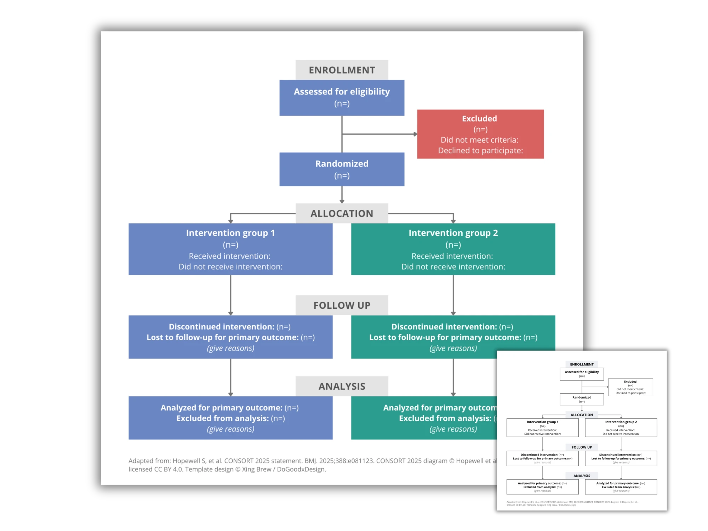

CONSORT Flow Diagram Template
If you're reporting a randomized trial, your journal wants a CONSORT flow diagram showing exactly how participants moved through the study. Most researchers build theirs from scratch in PowerPoint, which eats an afternoon and still looks cobbled together — or they wrestle with R packages and LaTeX code when all they needed was a diagram.

What goes in each box
The CONSORT flow diagram tracks participants through four phases:
- Enrolment — How many people were assessed for eligibility, and how many were excluded (with the reasons: didn't meet criteria, declined to participate, other).
- Allocation — How many were randomized, and how many were allocated to each arm (e.g., intervention vs. control).
- Follow-up — Who was lost to follow-up or discontinued the intervention in each arm, and why.
- Analysis — How many were actually analyzed per arm (intention-to-treat vs. per-protocol), and who was excluded from analysis.
Every box shows a number. The numbers have to add up — reviewers check, so double-check each split before you submit.
The common mistakes
- Missing exclusion reasons. "Excluded (n=12)" with no breakdown is the fastest way to get the diagram bounced back.
- Lopsided arms. If your intervention and control columns don't line up visually, readers can't compare them — keep the layout symmetric.
- Follow-up vs. analysis confusion. Lost to follow-up (people who dropped out) is different from excluded from analysis (data you had but didn't use). They're separate boxes.
Skip the redrawing: an editable template
I made an editable CONSORT flow diagram template in PowerPoint — clean boxes, symmetric arms, journal-ready formatting. Type in your numbers, restyle to match your poster or journal, drop it into your manuscript or poster.
Buy the template (opens in a new tab)
Want the whole poster done too? See my done-for-you poster design — I work with students, postdocs, and clinicians, usually on tight conference deadlines.
About: I'm Xing, a Toronto-based designer with a research background. I help graduate students turn their findings into clear, print-ready research posters, either with editable templates or a done-for-you design service. I've created visuals for researchers in academia and health organizations including SickKids, UHN, and the WHO.